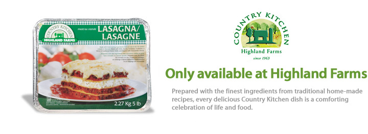
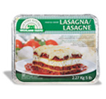
Homestyle Lasagna with Meat Sauce
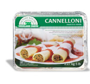
Homestyle Veal Cannelloni
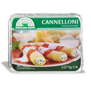
Homestyle Three Cheese Cannelloni
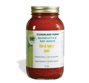
Homestyle Hot & Spicy Pasta Sauce
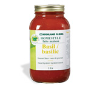
Homestyle Tomato Sauce
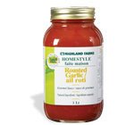
Homestyle Roasted Garlic Pasta Sauce
Homestyle Dry Roasted Almonds
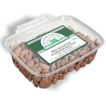
Homestyle Dry Roasted Salted Almonds
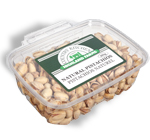
Homestyle Natural Pistachios
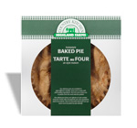
Homestyle Baked Pies
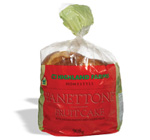
Homestyle Panettone Fruit Cake
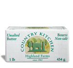
Homestyle Butter